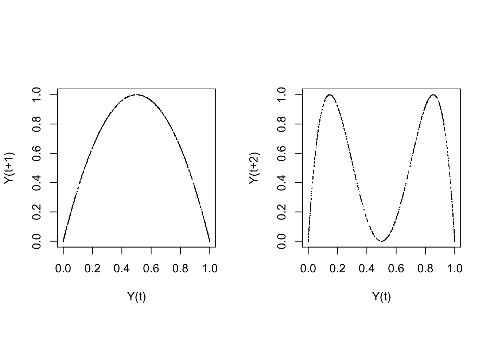

A.1 Linear and logistic growth
Solutions in a spreadsheet
The ‘solutions’ to iterating the Linear Map and theLogistic Map in a spreadsheet can be found in this GoogleSheet.
Solutions in R
Coding the difference equations in Matlab and R is always easier than using a spreadsheet. One obvious way to do it is to use a counter variable representing the iterations of time in a for ... next loop. The iterations should run over a vector (which is the same concept as a row or a column in a spreadsheet: An indexed array of numbers or characters). The first entry should be the starting value, so the vector index \(1\) represents \(Y_0\).
The loop can be implemented a number of ways, for example as a function which can be called from a script or the command / console window. In R working with functions is easy, and very much recommended, because it will speed up calculations considerably, and it will reduce the amount of code you need to write. You need to gain some experience with coding in R before you’ll get it right. In order to get it lean and clean (and possibly even mean as well) you’ll need a lot of experience with coding in R,therefore, we will (eventually) provide you the functions you’ll need to complete the assignments. All you have to do is figure out how to use, or modify them to suit your specific needs.
To model the autocatalytic growth equations we provide a function growth.ac(), which is able to simulate all of the processes discussed in the lectures. Using just a few lines of code, each of the 4 difference equations used in the assignments can be simulated. Basically the code block below contains the solutions to the Linear Map, the stylized Logisitc Map and the Van Geert model for cognitive growth.
library(plyr)
growth.ac <- function(Y0 = 0.01, r = 1, k = 1, N = 100, type = c("driving", "damping", "logistic", "vanGeert")[1]){
# Create a vector Y of length N, which has value Y0 at Y[1]
if(N>1){
Y <- as.numeric(c(Y0, rep(NA,N-2)))
# Conditional on the value of type ...
switch(type,
# Iterate N steps of the difference function with values passed for Y0, k and r.
driving = sapply(seq_along(Y), function(t) Y[[t+1]] <<- r * Y[t] ),
damping = k + sapply(seq_along(Y), function(t) Y[[t+1]] <<- Y[t] -r * Y[t] / k),
logistic = sapply(seq_along(Y), function(t) Y[[t+1]] <<- r * Y[t] * ((k - Y[t]) / k)),
vanGeert = sapply(seq_along(Y), function(t) Y[[t+1]] <<- Y[t] * (1 + r - r * Y[t] / k))
)}
return(ts(Y))
}
# Call the function with default settings and r = 1.1
Y <- growth.ac(r = 1.1)Some notes about this function:
- To select which growth process to simulate, the argument
typeis defined which takes the valuesdriving(default),damping,logisticandvanGeert.- The statement
switch(type, ...)will iterate an equation based on the value oftype.
- The statement
- A
time seriesobject is returned due to the functionts(). This is a convenient way to represent time series data, it can also store the sample rate of the signal and start and end times.- Most of the basic functions, like
plot()andsummary()will recognise a time series object when it is passed as an argument and use settings appropriate for time series data.
- Most of the basic functions, like
- The
sapply()function iterates \(t\) from \(1\) to the number of elements in \(Y\) (seq_along(Y)) and then applies the function. - The double headed arrow
<<-is necessary because we want to update vector \(Y\), which is defined outside thesapply()environment.
The return plot
To create a return plot the values of \(Y\) have to be shifted by a certain lag. The functions lead() and lag() in package::dplyr are excellent for this purpose (note that dplyr::lag() behaves different from stats::lag()).
# Function lag() and lead()
require(dplyr)
# Get exponential growth
Y1 <- growth.ac(Y0 = .9, r = .9, N = 1000, type = "driving")
# Get logistic growth in the chaotic regime
Y2 <- growth.ac(r = 4, N = 1000, type = "logistic")
# Use the `lag` function from package `dplyr`
op <- par(mfrow = c(1,2), pty = "s")
plot(lag(Y1), Y1, xy.labels = FALSE, pch = ".", xlim = c(0,1), ylim = c(0,1), xlab = "Y(t)", ylab = "Y(t+1)",
main = expression(paste(Y[t+1]==r*Y[t])))
plot(lag(Y2), Y2, xy.labels = FALSE, pch = ".", xlim = c(0,1), ylim = c(0,1), xlab = "Y(t)", ylab = "Y(t+1)",
main = expression(paste(Y[t+1]==r*Y[t]*(1-Y[t]))))par(op)Use l_ply() from package::plyr to create return plots with different lags. The l_ before ply means the function will take a list as input to a function, but it will not expect any data to be returned, for example in the case of a function that is used to plot something.
# Explore different lags
op <- par(mfrow = c(1,2), pty = "s")
l_ply(1:4, function(l) plot(lag(Y2, n = l), Y2, xy.labels = FALSE, pch = ".", xlim = c(0,1), ylim = c(0,1), xlab = "Y(t)", ylab = paste0("Y(t+",l,")"), cex = .8))
par(op)